De investigación. Propuesto por Juan Bosco Romero Márquez, profesor colaborador de la Universidad de Valladolid Problema 321 Sea el triángulo ABC. Sea E y D sobre la recta AC de manera que E sea exterior a AC y D interior a AC y tal que BA sea la bisectriz de EBD. Sean F y G sobre la recta BC tal que EF y DG sean paralelos a AB. Sean X la intersección de FA y EB Y la intersección de FD y EG Z la intersección de BD y AG U la intersección de AG y FD V la intersección de FA y EG M la intersección de AB y VD Demostrar que : a)C,X,Y y Z, son colineales y están sobre la mediana de AB. b)E, M y U son colineales c)Y está dentro del triángulo si y sólo si B<90º d)Y está fuera del triángulo si y sólo si B>90º e)Y está sobre el lado BC si B=90º Romero, J.B. (2006): Comunicación personal Solución de José María Pedret, Ingeniero Naval. Esplugues de Llobregat (Barcelona). (29 de julio de 2006) |
|
SOLUCIÓN |
|
PRIMERO
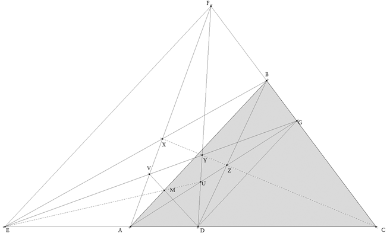 La alineación de X, Y, Z, C puede abordarse inmediatamente desde dos puntos de vista.
(i) Según el enunciado AB, DG y EF son paralelas, entonces basta aplicar el teorema de Pappus y además de que C es la intersección de las rectas que soportan respectivamente a E, A, D y F, B, G
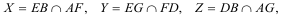
Y por el teorema de Pappus (afín), X, Y, Z deben estar alineados con C.
(ii) Otra manera de verlo (proyectiva) es suponer la proyección de EC sobre FC con centro en infinito y dirección AB. Es claro que
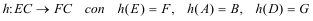
Entonces X, Y, Z están sobre el eje de la homografía; pero por ser proyección
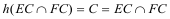 el eje de homografía pasa por C.
Por tanto X, Y, Z, C están alineados. |
|
SEGUNDO
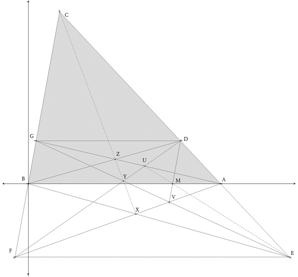 En este caso, no soy capaz de observar una configuración simple y utilizaré el método de "la fuerza bruta"; y para ello definimos unos ejes rectangulares con origen en B y eje de abscisas BA (ver figura) que nos dan las coordenadas de los puntos
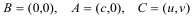 Para probar esta cuestión demostraremos que
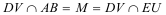 Determinamos las rectas que configuran los lados de ABC
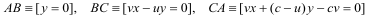 Como D es cualquiera, tomamos BD como una recta cualquiera por el origen
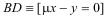 La condición de bisectriz de BA nos dice que BE es simétrica de BD respecto BA (pendiente de signo contrario)
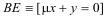 Hallamos el punto D
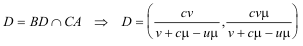 Hallamos el punto E
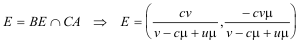 Hallamos la recta horizontal EF
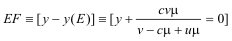 Hallamos el punto F
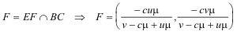 Hallamos la recta horizontal DG
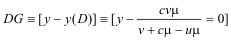 Hallamos el punto G
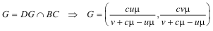 Hallamos la recta DF
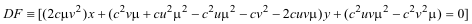 Hallamos la recta AG
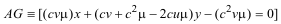 Hallamos el punto U
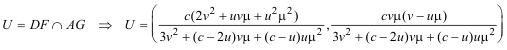 Hallamos la recta EG
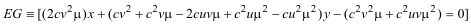 Hallamos la recta AF
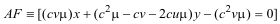 Hallamos el punto V
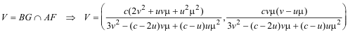 Hallamos la recta DV
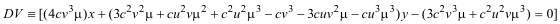 Hallamos la recta EU
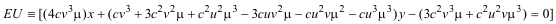 Hacemos la comprobación final
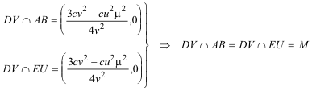 CON LO QUE DEMOSTRAMOS QUE M ESTÁ ALINEADO CON E Y U |
|
TERCERO Si nos fijamos en el punto C
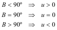 Hallemos Y
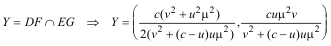 Por definición ABC está en la región del plano de ordenadas no negativas (por ejemplo, v>0), lo que nos lleva a que el signo de la ordenada de Y es el signo de u
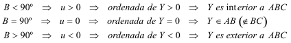 como queríamos demostrar. |